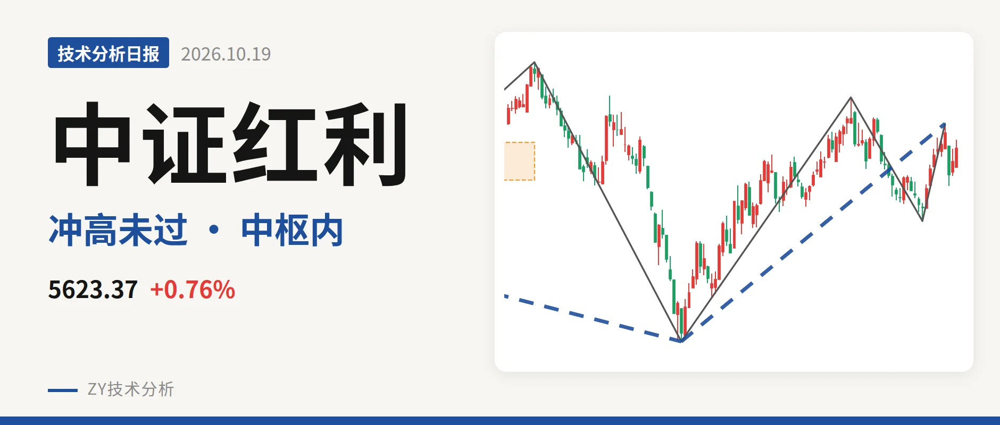
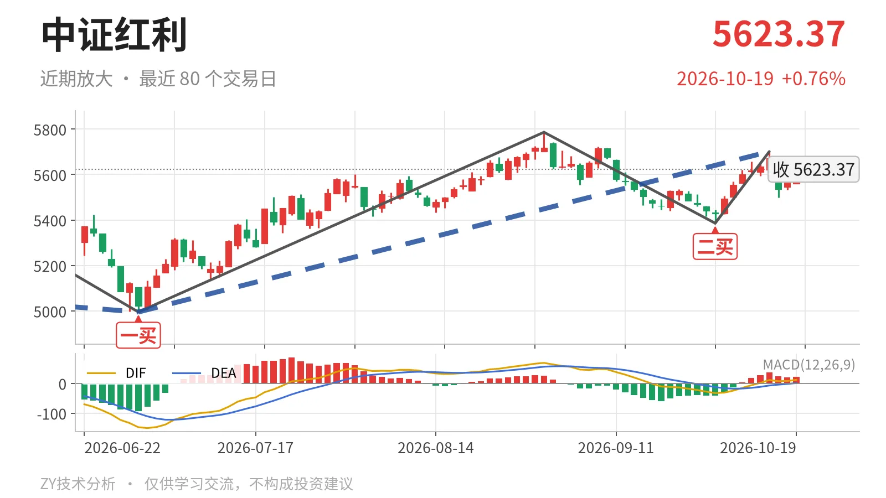

中证红利｜反弹贴近前高，5701点未过

最近日线中枢 5518.46—5639.99点，收盘位于中枢之内
一句话：日线反弹未破5702点前高，仍处中枢震荡。
🧭 走势结构：更大级别下跌未结束，反弹未成单边
更大级别上，2024年10月8日开始的下跌段延续至2026年6月30日见4995.49点后，6月30日至10月14日只是一段反向上涨走势，还没有结束，但也没有改变前一下跌段还在延续的性质。日线线段上，2025年7月23日以来的下跌线段没有结束，2026年6月30日以来的上涨线段只是其内部反弹段。因此当前不是单边上涨，而是下跌结构里的中枢震荡反弹。

📍 中枢与位置：贴近上沿5639点
最近日线笔中枢为2025年8月4日至2026年4月30日的5518.46—5639.99点，中轴5579.23点。最新收盘5623.37点在该中枢内，距上沿5639.99点仅16.62点，距下沿5518.46点约104.91点。该中枢中轴较2025年1月27日至2025年6月23日中枢的中轴5385.16点有所上移，但中枢还没有完成，价格也未站上上沿，上移尚未被确认。
🎯 买卖点：一买二买后缺三买
日线笔级别最近可确认的买点是6月30日一买4995.49点和9月29日二买5386.04点，后者高于前者，买点一个比一个高。10月14日冲高至5701.06点，但还没有出现新的三买或一卖，因而这次上行不能确认脱离中枢。10月14日高点距2025年7月23日一卖5702.03点仅0.97点，未创新高，前高一卖仍有结构压制。

⚡ 背驰：反弹笔红柱面积大幅缩小
9月29日至10月14日的上涨笔，红柱面积85、DIF高点11.1，与6月30日至9月1日的上涨笔红柱面积1451、DIF高点68.7相比，同向力度明显缩小；价格也未创出新高，属于不创新高、力度不济。该上涨笔已结束，而10月15日以来的回落尚未成笔，当前没有仍在延续的同向笔可比，后续需等下一上涨笔再作比较。
🔍 关键位置：上沿5639点与前高5702点
结构上，最新中枢上沿5639点和前高5702点是短期观察位。若后续重新站上5639点并回踩不破，才有条件出现三买；若反抽不能站回5639点上方，则10月14日的冲高只是对中枢上沿的假突破。向下看，9月29日二买5386点与中枢下沿5518点构成结构支撑，一旦5386点被跌破，二买被破坏，下方看6月30日一买4995点附近。当前结构中性，上沿未站稳、下沿未失守。
⚠️ 本文为基于公开行情数据的缠论技术结构记录，由程序自动计算并生成，仅供学习交流，不构成任何投资建议。市场有风险，投资需谨慎。